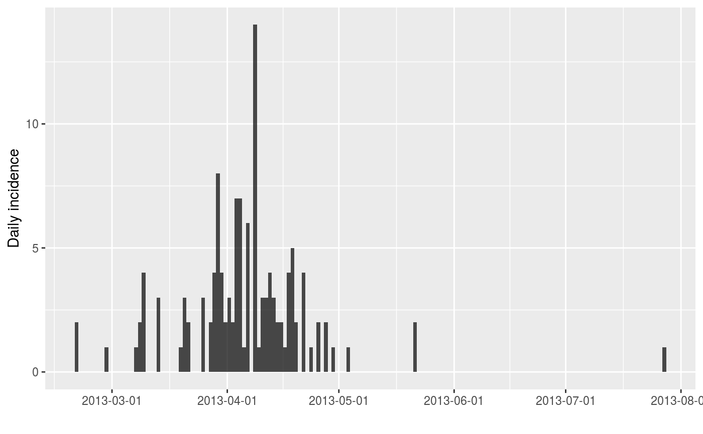
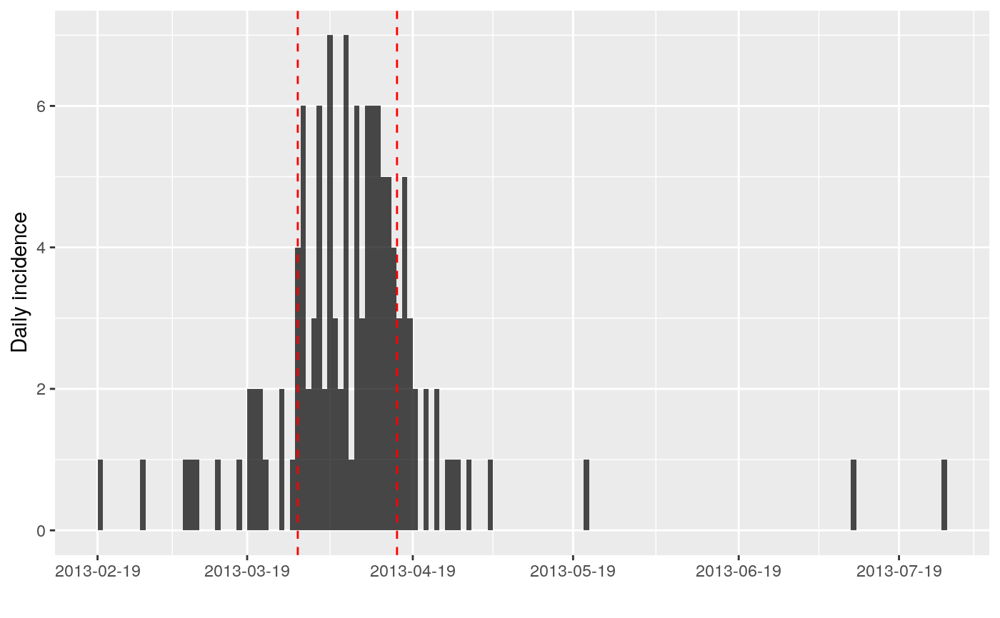
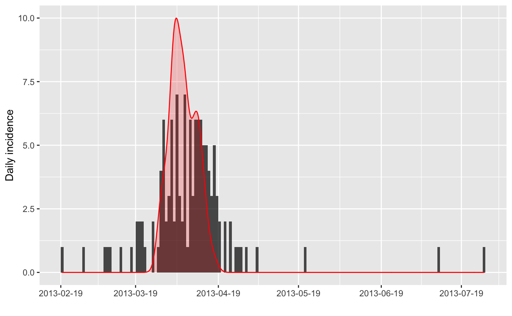

Estimate the peak date of an incidence curve using bootstrap
Source:R/estimate_peak.R
estimate_peak.RdThis function can be used to estimate the peak of an epidemic curve stored as
incidence, using bootstrap. See bootstrap for more information
on the resampling.
estimate_peak(x, n = 100, alpha = 0.05)
Arguments
| x | An |
|---|---|
| n | The number of bootstrap datasets to be generated; defaults to 100. |
| alpha | The type 1 error chosen for the confidence interval; defaults to 0.05. |
Value
A list containing the following items:
observed: the peak incidence of the original datasetestimated: the mean peak time of the bootstrap datasetsci: the confidence interval based on bootstrap datasetspeaks: the peak times of the bootstrap datasets
Details
Input dates are resampled with replacement to form bootstrapped datasets; the peak is reported for each, resulting in a distribution of peak times. When there are ties for peak incidence, only the first date is reported.
Note that the bootstrapping approach used for estimating the peak time makes the following assumptions:
the total number of event is known (no uncertainty on total incidence)
dates with no events (zero incidence) will never be in bootstrapped datasets
the reporting is assumed to be constant over time, i.e. every case is equally likely to be reported
See also
bootstrap for the bootstrapping underlying this
approach and find_peak to find the peak in a single
incidence object.
Examples
if (require(outbreaks) && require(ggplot2)) { withAutoprint({ i <- incidence(fluH7N9_china_2013$date_of_onset) i plot(i) ## one simple bootstrap x <- bootstrap(i) x plot(x) ## find 95% CI for peak time using bootstrap peak_data <- estimate_peak(i) peak_data summary(peak_data$peaks) ## show confidence interval plot(i) + geom_vline(xintercept = peak_data$ci, col = "red", lty = 2) ## show the distribution of bootstrapped peaks df <- data.frame(peak = peak_data$peaks) plot(i) + geom_density(data = df, aes(x = peak, y = 10 * ..scaled..), alpha = .2, fill = "red", color = "red") })}#> > i <- incidence(fluH7N9_china_2013$date_of_onset)#>#> > i #> <incidence object> #> [126 cases from days 2013-02-19 to 2013-07-27] #> #> $counts: matrix with 159 rows and 1 columns #> $n: 126 cases in total #> $dates: 159 dates marking the left-side of bins #> $interval: 1 day #> $timespan: 159 days #> $cumulative: FALSE #> #> > plot(i)#> > x <- bootstrap(i) #> > x #> <incidence object> #> [126 cases from days 2013-02-27 to 2013-05-21] #> #> $counts: matrix with 84 rows and 1 columns #> $n: 126 cases in total #> $dates: 84 dates marking the left-side of bins #> $interval: 1 day #> $timespan: 84 days #> $cumulative: FALSE #> #> > plot(x)#> > peak_data <- estimate_peak(i) #> > peak_data #> $observed #> [1] "2013-04-03" #> #> $estimated #> [1] "2013-04-05" #> #> $ci #> 2.5% 97.5% #> "2013-03-29" "2013-04-14" #> #> $peaks #> [1] "2013-04-03" "2013-04-08" "2013-04-03" "2013-04-08" "2013-04-06" #> [6] "2013-04-14" "2013-04-03" "2013-04-11" "2013-04-11" "2013-04-10" #> [11] "2013-04-06" "2013-03-29" "2013-04-03" "2013-03-29" "2013-04-11" #> [16] "2013-04-17" "2013-04-12" "2013-04-01" "2013-04-03" "2013-04-06" #> [21] "2013-04-01" "2013-04-06" "2013-04-10" "2013-04-06" "2013-04-06" #> [26] "2013-03-28" "2013-04-06" "2013-04-11" "2013-04-06" "2013-04-03" #> [31] "2013-04-01" "2013-04-03" "2013-04-01" "2013-04-06" "2013-04-06" #> [36] "2013-04-03" "2013-04-06" "2013-04-14" "2013-04-06" "2013-04-10" #> [41] "2013-04-03" "2013-04-10" "2013-04-11" "2013-04-11" "2013-04-03" #> [46] "2013-04-06" "2013-04-03" "2013-04-06" "2013-04-06" "2013-04-13" #> [51] "2013-04-03" "2013-04-03" "2013-04-06" "2013-04-08" "2013-04-13" #> [56] "2013-04-03" "2013-04-06" "2013-04-08" "2013-04-01" "2013-04-11" #> [61] "2013-03-29" "2013-04-03" "2013-04-12" "2013-04-08" "2013-04-03" #> [66] "2013-03-29" "2013-04-03" "2013-04-10" "2013-04-03" "2013-03-29" #> [71] "2013-04-13" "2013-03-29" "2013-04-14" "2013-04-03" "2013-04-03" #> [76] "2013-03-29" "2013-03-29" "2013-04-01" "2013-04-06" "2013-03-29" #> [81] "2013-04-03" "2013-04-01" "2013-04-06" "2013-04-03" "2013-04-14" #> [86] "2013-04-13" "2013-04-10" "2013-04-08" "2013-04-03" "2013-04-03" #> [91] "2013-04-11" "2013-04-01" "2013-04-11" "2013-04-10" "2013-04-01" #> [96] "2013-04-01" "2013-04-03" "2013-04-06" "2013-04-17" "2013-04-12" #> #> > summary(peak_data$peaks) #> Min. 1st Qu. Median Mean 3rd Qu. Max. #> "2013-03-28" "2013-04-03" "2013-04-06" "2013-04-05" "2013-04-10" "2013-04-17" #> > plot(i) + geom_vline(xintercept = peak_data$ci, col = "red", lty = 2)#> > df <- data.frame(peak = peak_data$peaks) #> > plot(i) + geom_density(data = df, aes(x = peak, y = 10 * ..scaled..), #> + alpha = 0.2, fill = "red", color = "red")